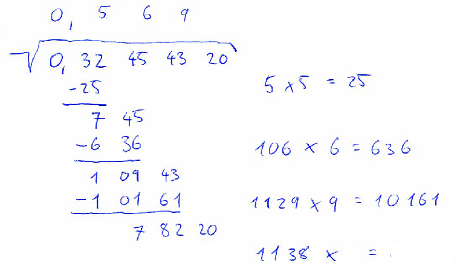

Nowadays, people use calculators and computers for almost everything. However, we are now working on the Intercontinental Plan for Sabotage of Calculators and soon all calculators will be destroyed. You better dust off you old skills and get a pencil and some paper.
Problem specification
Your task will be to compute the square root of a given number by hand (or if you insist, with help of your computer). In case you have never learned how to do this essential mathematical operation, we provide detailed instructions:
At the beginning, separate the number into pairs of digits, starting at decimal point. In case there is odd number of digits after the decimal point, add single zero digit at the end of the number. In case there is odd number of digits before the decimal point, the first “pair” will consist of only one digit. For example, if the number is 12345.678, we will split the number into pairs “1”, “23”, “45”, “67” and “80”. The square-root algorithm will compute the result in several iterations, each iteration taking into account one new pair of digits and appending one digit to the result.
In the first iteration you should estimate the square root of the first pair of digits. That is, you should find the largest integer x such that x2 ≤ first_pair. The value of x will be the first digit of the result. Now you should compute value of x2 and subtract it from the value of the first pair.
Each of the remaining iterations can be computed as follows: Drop the next pair of digits next to the result of the previous subtraction. Denote the resulting number as t. You need to estimate next digit of the result. For this write “y_ × _ =” to some temporary place, where y is twice the value of the result computed so far. Now replace both “_”s with the same digit i such that the result will be less or equal than t and i will be as large as possible. The value of i will be the next digit of our result. After i is found, the result of “yi × i” should be subtracted from the value of t. This step ends the current iteration.
You may see the whole computation in little steps on the following pictures:
7. estimate next digit

Input specification
The first line of the input file contains an integer t specifying the number of test cases. Each test case is preceded by a blank line.
Each test case consists of a single line with a single real number containing up to 16 digits. You may assume that the number does not contain unnecessary leading zeroes. (The “0” in “0.12” is considered neccessary and it will always be present if such a number occurs.)
Output specification
Output will consist of outputs of individual test cases. Put a blank line between consecutive test cases.
The output of one test case is a character matrix consisting of r rows and c columns. The numbers r and c should be as small as possible. Blank spaces in the matrix should contain the character “.” (dot).
Basically, the output matrix should look like the result of the handwritten computation shown in the problem statement. It should consist of the following parts: the input value, a square root sign, the result of calculation, and the intermediate calculations needed to obtain the result.
The square root sign should consist of character “_” (underscore), then characters “\/” (backslash and forward slash) on the line below, then as many dashes as necessary “-” and the root sign should be finalized by a backtick “`” (ASCII 96) on the line below. The space under the dashes should be filled with the input value. The input value should be written as two-digit pairs separated with one blank character. (Remember that the first pair may consist of only one digit.) There should also be exactly one blank space on the left and one on the right of the formatted input value.
If the input value contains a decimal sign (a dot in the input file), it must also be present in the output. First, format the digit pairs and the square root sign as described above. Then, replace the appropriate blank space by a comma “,” character.
The result should be on the line above the square root sign and each digit of the result should be right-aligned with the corresponding input pair. In case the input value contains a decimal sign, the result must contain a comma in the same column as the input value does.
The intermediate calculations may be divided into two groups: subtractions and multiplications. Each multiplication should be in format “12.x.3.=.456” and should be left-aligned on the first position after the end of the square root sign. Each subtraction consists of the result of previous subtraction, the new dropped pair, the subtracted value, an underline, and the result of subtraction. The dropped pair should be aligned with its occurrence in the input. The subtracted value should consist of the character “-” (minus/dash) immediately followed by the value. The value should be split into pairs of digits and it should be right-aligned with the previous row. The underline should consist of several dashes, right aligned with the current computation. The underline must be as short as possible, but long enough so that that both above operands (including the minus sign, but excluding any leading zeroes the operands may have) will be completely above the underline. Finally, the result of subtraction should be right-aligned with the whole computation and should be split into pairs of digits separated by blanks.
Because computing square root of leading zeroes is useless (square root of zero is zero), the computation shown in your output should start with the first pair of digits that is not all zeroes. Note hovewer, that the input and the result must contain all the necessary zeroes. In particular this means that for the input “0” you should only output the square root sign with a zero below and a zero above it.
Example